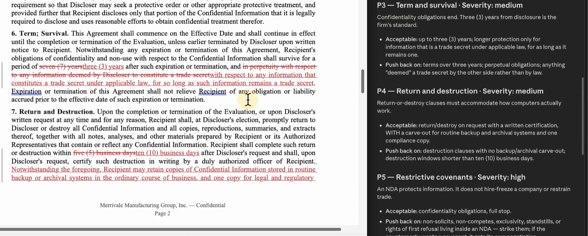

Sample: fictional names, nothing was sent The redline · Merrivale Bluepine NDA The tracked changes3 of the 9 redlines, quoted exactly from the returned Word file. Struck through: the original wording. Underlined: the change. The confidentiality term seven (7) years→three (3) years
The window to return materials within five (5) business days→within ten (10) business days
What counts as confidential and whether or not marked, designated, or otherwise identified as confidential→and that is marked or identified as confidential at the time of disclosure
The returned Word file, tracked changes on, the firm’s positions beside it  |